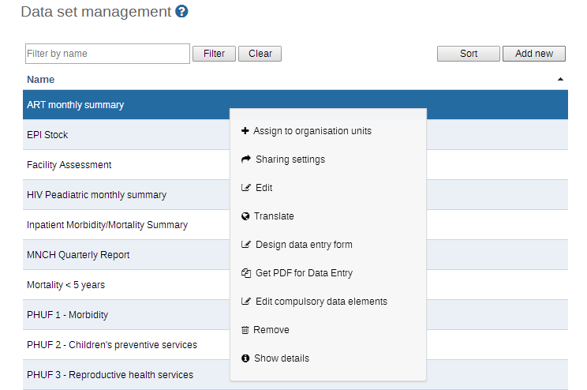
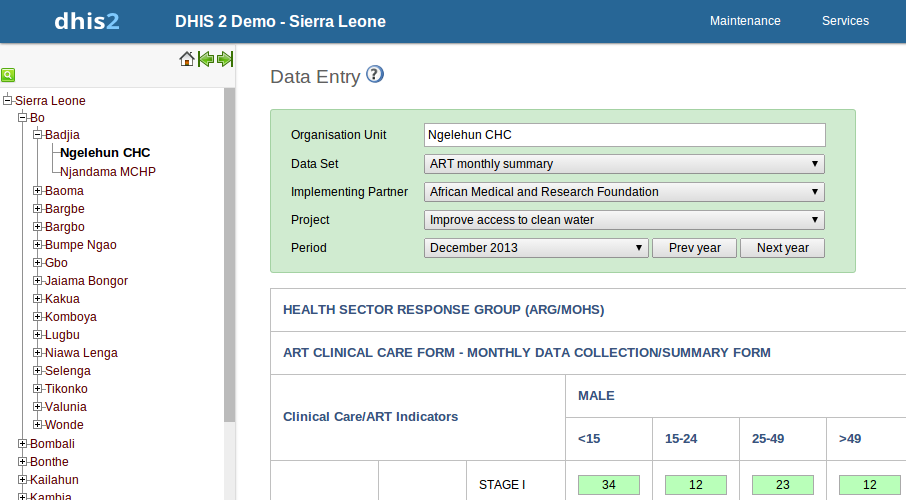

Table of Contents
All data entry in DHIS2 is organised through the use of data sets. You can add and edit data sets in Maintenance->Data sets. A data set is a collection of data elements grouped together for data collection and data export between instances of DHIS2 (e.g. from a district office local installation to a national server).
A data set has a data collection frequency which can be set through the period type property. The frequency can be daily, weekly, monthly, quarterly, six-monthly, or yearly. Which data elements to include in the data set and the frequency are set in the Add/Edit Data set window. In order to use a data set to collect data for a specific orgunit you must assign the orgunit to the data set, and this mechanism controls which org units that can use which data sets.
Data sets also are assigned to specific organisation units which will be allowed to enter data for all data elements in that data set. You can assign org units to a data set in the Data set management by clicking on the blue folder icon, the first icon under Operations, next to the data set you would like to modify. Alternatively you can manage orgunit assignments for all data sets together in the Data set Assignment Editor (available in the right-side menu).
A data set has several properties that must be entered when creating a new one. Name, short name, code and description should be used to identify and describe the data set. The other properties deserve an explanation:
-
Expiry days: Controls for how long it should be possible to enter data in data entry for this data set. Expiry days refer to the number of days after the end date of the selected data entry period where the data entry form should be open for entry. After the number of days has expired, the data set will be locked for further entry. You can set manual exceptions to this using the lock exception functionality in data administration module.
![[Note]](resources/images/admon/note.png)
Note If the number of expiry days is set to zero, this will allow data entry into all possible historical time periods.
-
Complete notification recipients: Sets which users should receive a message with a notification about this data set being marked as complete in data entry. In this list you can select a user group, and all members in this group will receive a notification. The message will be delivered through the DHIS messaging system.
-
Approve data: Define whether data for this data set should be Approved. (See the Data approval chapter.)
-
Skip aggregation: Define whether data for this data set should be skipped during data mart generation. You should leave this on no, which is the default behavior, in most situations. Can be useful if you have limited server resources and are setting up new experimental data sets.
-
Allow future periods: Defines whether it should be possible to enter data for future periods for this data set in data entry. The default behavior is to allow data entry only for periods which have passed, i.e. the end date is after today's date. If set to yes you can enter data for future periods, which is useful e.g. for population, target and planning data.'
-
All fields for data elements required: Defines whether it is mandatory to fill all values for a data element in data entry if one or more values have been filled. This means that if the user enters one data value for a data element in an entry field (i.e. for a category option combination), then she must enter data for all fields belonging to that data element (i.e. all category option combinations).
-
Complete allowed only if validation passes: Controls whether it should be possible to mark a data entry form as complete only if the validation of that form is successful. Default behavior is yes. If set to no, then a user cannot mark the form complete if validation fails.
-
Skip Offline: Controls whether this data entry form should be downloaded and saved in the user's web browser. Normally you should leave this on no, which is the default behavior. If you have forms which are rarely used and are very big you can consider setting it to yes to speed up initial loading of the data entry module.
Your data set will then be ready to be used in Services->Data Entry for the org units that you have assigned and for periods according to your selected frequency (period type).
The data set management function allows you to create new data sets and manage existing ones. The dialog can be reached by choosing Maintenance->Data sets->Data set. A sample dialog is displayed below.
|  |
Click on the name of the dataset you would like to alter, and a context menu will be displayed. Each of the available functions are described below.
-
Sort: This controls the custom sort order. Depending on the systems settings, users will see the data sets ordered in the specific order which you provide.
-
Add new: Adds a new data set. When pressing this button, you can create a new data set. You need to provide a name, short name and frequency. The "Code" attribute is optional. Data elements can be added to the "Selected data element" list by selecting them individually. and pressing the button. Indicators can also be added to data sets and will be available to be placed in custom data entry forms when they need to be shown along with data elements on the same data entry form. Press "Save" to add the new data set.
-
Assign organisation units to data sets: This function will allow you to assign individual organisational units to a data set. Only organisational units which have been assigned to a data set will be allowed to enter data into the data set.
-
Sharing settings: Assign different rights to the dataset based on user groups and user roles.
-
Edit data set: This will allow you to edit existing data sets, for instance when you need to add or remove data elements and indicators to a given data set.
-
Translate: Allows you to translate the name of a data set to a different language.
-
Design data entry form. Refer to the section on custom data entry forms for detailed information of how to use this function.
-
Get PDF for Data Entry: Download a PDF file which can be used for offline data entry.
-
Edit compulsory data elements: This dialog will allow you to add or remove data elements which will be marked as compulsory during data entry.
-
Delete: Completely removes a data set from the system.
![[Warning]](resources/images/admon/warning.png)
Warning Any data set which is deleted from the system is irrevocably lost. All data entry forms, and section forms which may have been developed will also be removed. Ensure that you have made a backup of your database before deleting any data set in case you need to restore it at some point in time.
-
Show details: Display some informative information about the data set, including the number of data elements, the frequency, and which data entry form has been assigned to the data set.
Before reading this section it is recommended to familiarize oneself with the sections on categories in the data element chapter. Whereas data element categories can be used for capturing disaggregations of data elements, data set categories are used to capture information which is common to an entire form.
To set up categories for data set, start by creating category options, categories and category combinations like described in the data element chapter. Make sure that you set the type of categories and category combinations to "Attribute". To assign a category combination to a data set, you can select it while creating or updating the data set from the "Combination of categories" drop-down box.
When a data set is linked to a category combination, those categories will be displayed as drop-down boxes in the data entry module. Data captured in the form will then be linked to the selected category options from those drop-down boxes.
An scenario for when data set categories are useful is when you need to capture a data entry form for a implementer partner organisation and a project. In that case, start by creating category options and categories for all partner organisations and projects, before linking these in a new category combination. Then, link the category combination to the data set (form) for which you need to capture this information. When opening this data set in data entry module, the partner organisation and project categories will automatically be rendered as drop-down boxes, allowing you to select a specific implementing partner organisation and project before continuing to do data entry.
|  |